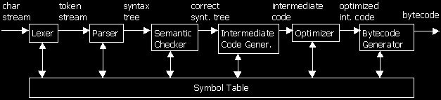

Implementing a Scripting Engine
by Jan Niestadt
This article originally appeared on Flipcode.
Part 1: Overview
Introduction
Okay. You want a scripting language for your engine. Why? Because they're just really cool, and everybody has 'em these days.
First, decide what kind of scripting you want; Henry Robinson already wrote an introduction to the different kinds scripting (be sure to read it if you haven't already). In this tutorial series, I'll be talking about a compiler / virtual machine system like UnrealScript.
Next, you need to know two things: how to implement such a scripting engine, and some reasons why a scripting engine is not only cool but actually useful.
Here's what I made up:
- Useful new language features like states, latent code, etc.
- A sandbox environment that can't crash the game engine
- Being able to create game content without knowledge of the engine internals and without having to recompile the engine
- Fully platform-independent script code
However, there are also drawbacks:
- Relatively slow - scripts run at least 15 times slower than executable code
- Limiting - scripts can't be used to create entirely new visual effects (partly because of the lack of speed).
- People creating game content have to learn a new language
Of course, we don't let those stop us; we had already made up our minds. Now, where to start?
Required Reading
I started when Unreal hadn't been released for very long. I was browsing their tech site and found the UnrealScript reference document. I had heard of UnrealScript of course, but didn't really know what it was. I read the document and thought the idea of a script language was really cool. I wanted to write my own, and link it to a game engine so that the whole world could easily create new content for my game.
Fortunately, I got a class in Compiler Construction that semester, and as a practical assignment we had to implement a VERY simple Pascal compiler. I started working in parallel (OK, semi-parallel) on my own, better, compiler. I already had a "working" version which accepted a small subset of C, but I coded it in about 2 weeks, and the internal structure was pretty awful.. I had to completely redesign the whole thing. I'm sure you've had a similar experience at some point in your life.. So I'm still working on this, and learning a lot about compilers while doing it.
But, let's get to a little useful info.
First of all, I advise anyone who's going to program a compiler to get the Dragon book. Most of you (especially CS students like me) probably know this one already. For those who don't, I'm talking about Compilers - Principles, Techniques and Tools by Aho, Sethi and Ullman (ISBN 0-201-10194-7). It has a picture of a dragon on the front, hence the name "Dragon book". Believe me, anyone who knows anything about compilers has read this book.
The book hasn't changed since 1986; this is because the underlying techniques of compiler design practically haven't changed since the 1960's. Of course, this book doesn't cover processor-specific optimizations, but there are other books for that. Besides, we want to compile to bytecode, not machine code.
Second, if you're looking for a quick overview of implementing a bytecode script language, check out this article on GamaSutra, which is a very readable story of how the Jedi Knight script language was implemented. I'll cover everything that's in there too, but it's still an interesting read.
What We Need
Basically a compiler consists of the following components:
- A symbol table, which contains all the symbols and information about type, scope, etc.
- A lexical analyzer, which is a function that converts a character stream (i.e. the source file) into tokens (i.e. keywords, operators, etc.)
- A parser, which takes the token stream and builds a syntax tree from it.
- A semantic checker, which checks the syntax tree for semantic errors
- An itermediate code generator, which converts the syntax tree into intermediate code
- An optimizer (optional) which optimizes the intermediate code
- A code generator, which generates bytecode from the intermediate code
- Last but not least, the virtual machine on which the bytecode is to be executed.

If you have programmed all these components, together they will form a complete scripting system.
Is That All?
Feeling a little overwhelmed? About to decide that maybe scripting isn't so cool after all and DLL's are really the only way to go? No need; I will be talking about each of the components in detail soon and most of them aren't really that hard. Creating a complete scripting engine *is* a lot of work, though, and structuring your code is essential.
In the remaining parts of this tutorial we will develop a very simple compiler / virtual machine system. It will be nowhere near a full scripting language, but it will implement all the components listed above. I'm thinking about a simple language to manipulate strings.
For now, just check out the links and let the above sink in. All comments are greatly appreciated by the way!
Next: The Lexical Analyzer